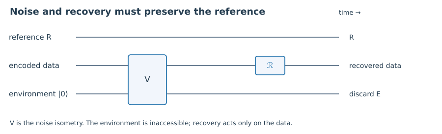

1. Quick check §
What does cₐᵦ depend on?
Hint 1
Compare logical input with physical error labels.
Worked solution
It may depend on the code and the two errors, but it must not depend on the logical state stored in the code.
Chapter 02 · Draft lesson
What condition guarantees that one recovery works for every logical state?
Starting point: Chapter 1; channels, Kraus operators, and reduced states from Quantum Information Theory.
Anchor example: The repetition code tested against {I,X₁,X₂,X₃} and against {I,Z₁}.
Method: Derive a code-space condition from the environment’s reduced density matrix.
Watch for: Checking only diagonal error probabilities misses coherence leaking to the environment.
This lesson includes explanations, worked examples, and problems with solutions. Advanced results whose proofs are outside the chapter are identified explicitly.
Our first code succeeded because the error syndrome did not depend on the stored amplitudes. Can we turn that observation into a test that works for an arbitrary code and arbitrary noise? We want a criterion that we can check before inventing a decoder—and that tells us why a failed criterion makes recovery impossible.
Let P be the projector onto a code subspace, and let a noise channel have Kraus operators Eₐ. A dilation writes its action as \(V|\psi\rangle=\sum_aE_a|\psi\rangle|a\rangle_E\), with \(\sum_aE_a^\dagger E_a=I\). The environment label is an orthonormal basis used to describe the dilation; it need not correspond to a detector that anyone actually reads.
After discarding the output system, the environment’s matrix entry in row a and column b is \(\langle\psi|E_b^\dagger E_a|\psi\rangle\). Notice the off-diagonal entries. It is not enough that the probabilities of the individual error labels are independent of the input. The environment can also carry input-dependent coherence between labels.
If exact recovery restores an arbitrary reference-entangled logical state, the recovered pure logical–reference pair must factor from the environment. The environment can therefore contain no record of the logical state. Requiring its matrix entries to be constant for every vector in the code gives
\[\boxed{PE_a^\dagger E_bP=c_{ab}P\quad\text{for every }a,b.}\]Why does constancy of expectation values imply an operator identity? Test basis vectors first, then their normalized sums and sums with relative phase i. These reveal the diagonal, real off-diagonal, and imaginary off-diagonal matrix entries. A quadratic form that is the same constant on every normalized code vector must be that constant times identity on the code.
This is the Knill–Laflamme condition. The necessity argument uses environmental independence; the sufficiency construction follows next. The original theorem is developed in Knill and Laflamme, A Theory of Quantum Error-Correcting Codes.

Worked check 2.1. For a one-dimensional code, is every channel correctable on that code?
Yes, in the restricted sense that the code contains only one known state. Every compressed operator is a scalar times P, and recovery may simply re-prepare that state. Such a code stores no unknown logical qubit, so this does not provide useful quantum memory.
Suppose the condition holds. The matrix c is positive semidefinite: for coefficients vₐ, the quadratic form \(\sum_{a,b}v_a^*c_{ab}v_b\) equals the squared norm of \(\sum_bv_bE_b|\psi\rangle\) for any normalized code state. We can therefore diagonalize c and choose linear combinations Fᵣ of the errors such that \(PF_r^\dagger F_sP=d_r\delta_{rs}P\), with \(d_r\ge0\).
For each nonzero dᵣ, the map \(W_r=F_rP/\sqrt{d_r}\) is an isometry on the code: it preserves all inner products there. Different r have orthogonal images. This gives an explicit recovery strategy. Measure which image subspace contains the state, then apply the inverse isometry on that subspace. Each branch returns the same logical state. A completion on the unused orthogonal space makes the recovery a channel on the entire physical space.
For the repetition code and errors I,X₁,X₂,X₃, we already met these orthogonal images. They are the spans of {000,111}, {100,011}, {010,101}, and {001,110}. Cross products compress to zero, while each error’s squared product compresses to P. The abstract construction is exactly the syndrome measurement and conditional correction from Chapter 1.
It can happen that distinct physical errors have the same action on the code. Their error images then overlap before diagonalizing c; some eigenvalues dᵣ may be zero. This is called degeneracy. Recovery need not determine which microscopic error occurred. It only needs to undo its action on the information we stored. Trying to distinguish equivalent errors can add an unnecessary task.
Worked check 2.2. Why do I and Z₁Z₂ not need distinct syndromes on the repetition code?
Z₁Z₂ acts as +1 on both codewords, so it acts exactly like I throughout the code. Both compressed cross products equal P, and the error pair is correctable without identifying which member occurred. Doing nothing already corrects this pair.
Real noise is not obliged to choose one Pauli operator from a menu. A small rotation may act coherently: \(e^{-i\theta X/2}=\cos(\theta/2)I-i\sin(\theta/2)X\). Does a code that corrects I and X also correct this rotation? Yes, if the correction condition holds for their entire error set. The channel’s Kraus operators can be linear combinations of the correctable errors.
To see why, write \(F_\mu=\sum_a f_{\mu a}E_a\). Then \(PF_\mu^\dagger F_\nu P=\sum_{a,b}f_{\mu a}^*f_{\nu b}c_{ab}P\), again a scalar times P. The code corrects every channel whose Kraus operators lie in that span. This is an exact algebraic statement; it does not require pretending the environment sampled a classical Pauli error.
Every operator on one qubit is a complex linear combination of I,X,Y,Z. Consequently, correcting these Pauli errors on each possible single position suffices to correct an arbitrary channel acting on one unknown position. The condition must include cross products between errors at different positions. Correcting X alone is not enough: on the repetition code, PZ₁P acts as logical Z and is not proportional to P.
There is also an important boundary. Independent noise on every qubit produces Kraus products of many weights. A code correcting all weight-one errors does not exactly correct every such product. It suppresses the leading contribution only under an appropriate noise model. Later, fault tolerance will use that distinction to organize which collections of faults are dangerous.
Worked check 2.3. Does the three-qubit repetition code correct an arbitrary rotation about X on the second qubit?
Yes. Its Kraus operator is a linear combination of I and X₂, both in the correctable span. Syndrome measurement separates the corresponding error sectors without learning α or β, and each conditional correction restores the logical state. This does not extend to a rotation about Z on that code.
These exercises draw on the whole chapter. Attempt each question before opening a hint, explain your reasoning, then compare it with the worked solution.
What does cₐᵦ depend on?
Compare logical input with physical error labels.
It may depend on the code and the two errors, but it must not depend on the logical state stored in the code.
Which condition excludes logical information from environmental coherences?
Look beyond a=b.
The cross conditions PEₐ†EᵦP=cₐᵦP with a≠b. Equal individual error probabilities alone do not constrain these coherences.
Evaluate PX₁†X₂P for the repetition code.
A two-bit flip takes each codeword outside the code.
It is zero. The vectors X₁|ψ_L⟩ and X₂|φ_L⟩ lie in orthogonal syndrome sectors for all logical inputs.
Evaluate PZ₁P in the logical basis.
Apply Z₁ to |000⟩ and |111⟩.
It is diag(1,−1), a logical Z, so {I,Z₁} fails the correction condition.
Show that equal environmental diagonals are insufficient using errors I/√2 and Z₁/√2.
Compute their diagonal and off-diagonal products.
Each diagonal product is I/2, independent of the input. The off-diagonal product is Z₁/2, whose code expectation depends on the logical state. The channel dephases logical coherence.
Express a general 2×2 matrix in the Pauli basis.
Take traces against orthogonal Pauli matrices.
\(A=(\tr A)I/2+(\tr XA)X/2+(\tr YA)Y/2+(\tr ZA)Z/2\). The coefficients can be complex, so the statement includes nonunitary Kraus operators.
Why may zero eigenvalues of c be discarded in constructing recovery?
Compute the norm of Fᵣ|ψ⟩.
If dᵣ=0, that norm is zero for every code vector. The associated error combination has no action on the code.
Must recovery identify the physical error uniquely?
Consider two errors differing by a code stabilizer.
No. If they act identically up to a common phase on the code, the same recovery works. Distinguishing them is not required.
Does correction of arbitrary one-qubit noise imply exact correction of independent noise on all qubits?
Expand a tensor product of local Kraus operators.
No. The expansion contains multi-qubit terms outside the correctable span. Their probabilities or amplitudes must be bounded using a noise model.
Prove that the correction condition is unchanged by a unitary change of Kraus basis.
Insert the new linear combinations into the compressed products.
If Fᵣ=ΣₐuᵣₐEₐ, then PFᵣ†FₛP=Σₐᵦuᵣₐ* uₛᵦ cₐᵦ P. The new coefficient matrix is a unitary basis transform of c, still independent of the logical input.